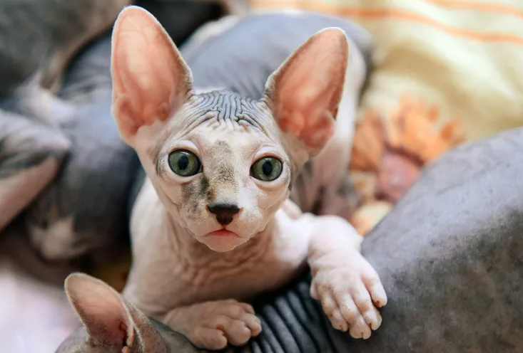

<body>

<div class="container">
  <div class="main-container">

    <div class="content-container">
      <div class="image-container">
        <h1>Hairless Cat & Kitten Breeds</h1>
        
      </div>

      <div *ngIf="!isFullTextShown">
        <p>While most cats are known for their soft, furry coats, a few are famous for their lack thereof. Naked cats,
          or hairless cats, as they are properly known, have unique grooming needs and distinct personalities.
        </p>
        <p>Get ready to learn a little bit more about these unique felines, from specific breeds to health and grooming
          needs, and find out if a hairless cat might be right for you.
        </p>
        <h1> How do you care for a hairless cat? </h1>
        <p>First things, first. Before you think about bringing home a cat with no hair, you should know that they have
          some specific health, grooming and skin-care needs.
        </p>
        <h2> Grooming </h2>
        <p>Some hairless cats may have a peach-fuzz like coat, and others may be completely bald. In either case, they
          lack long hair to absorb oils from their skin, so they need regular baths.

          If they aren’t properly groomed, they may end up with sticky buildup on their body or develop skin problems.
          Use a shampoo formulated for cats, and aim to bathe a hairless cat approximately once a week.
        </p>
        <h2> Sensitivity to temperatures </h2>
        <p>Can a hairless cat get sunburnt? Do hairless cats get cold? Of course! Hairless cats can be sensitive to both
          the cold and the sun.
        </p>
        <p>If the temperatures are dropping, dress your cat in a sweater to help her stay warm. And as far as sun goes —
          hairless cats (and all cats, really) should be indoor pets. Shade, protective clothing, and limiting sun
          exposure to non-peak hours can help keep your cat healthy. Never use sunscreen for humans on a cat.
        </p>
        <button (click)="toggleTextDisplay()" class="show-button" mat-button>Show More</button>
      </div>

      <div *ngIf="isFullTextShown">
        <p>While most cats are known for their soft, furry coats, a few are famous for their lack thereof. Naked cats,
          or hairless cats, as they are properly known, have unique grooming needs and distinct personalities.
        </p>
        <p>Get ready to learn a little bit more about these unique felines, from specific breeds to health and grooming
          needs, and find out if a hairless cat might be right for you.
        </p>
        <h1> How do you care for a hairless cat? </h1>
        <p>First things, first. Before you think about bringing home a cat with no hair, you should know that they have
          some specific health, grooming and skin-care needs.
        </p>
        <h2> Grooming </h2>
        <p>Some hairless cats may have a peach-fuzz like coat, and others may be completely bald. In either case, they
          lack long hair to absorb oils from their skin, so they need regular baths.

          If they aren’t properly groomed, they may end up with sticky buildup on their body or develop skin problems.
          Use a shampoo formulated for cats, and aim to bathe a hairless cat approximately once a week.
        </p>
        <h2> Sensitivity to temperatures </h2>
        <p>Can a hairless cat get sunburnt? Do hairless cats get cold? Of course! Hairless cats can be sensitive to both
          the cold and the sun.
        </p>
        <p>If the temperatures are dropping, dress your cat in a sweater to help her stay warm. And as far as sun goes —
          hairless cats (and all cats, really) should be indoor pets. Shade, protective clothing, and limiting sun
          exposure to non-peak hours can help keep your cat healthy. Never use sunscreen for humans on a cat.
        </p>

        <h1>Are hairless cats hypoallergenic? </h1>
        <p>It may seem counterintuitive, but hairless cats are not hypoallergenic. They still produce the protein Fel
          d1, an allergen found in dander and saliva secretions, which can cause reactions in those sensitive to cats.
        </p>
        <p>However, they do secrete lower amounts of this protein, and since they don’t shed like a typical cat, there’s
          less of it sticking around on couches and carpets. Therefore, some people who have allergies may be able to
          tolerate living with a hairless cat.
        </p>

        <h1>Are hairless cats good pets? </h1>
        <p>Hairless cats make excellent pets. They may look a little quirky, but underneath all those wrinkles lie
          personalities that are affectionate, curious and good-natured. You can find out more by checking out a few
          hairless cat breeds below.
        </p>

        <h1> What are the hairless cat breeds? </h1>
        <p> Some people may have heard of the Sphynx cat, but did you know that there are a number of other hairless cat
          breeds? Here are five hairless felines worth checking out.
        </p>
        <h2> 1. Sphynx </h2>
        <p> Sweet, silly, and warmly enthusiastic, the Sphynx makes for a charming companion. As a whole, they are
          athletic, love being around people (and even some dogs), and exhibit a friendly demeanor to all they meet. Not
          all Sphynx are completely hairless. Some have a very fine down or peach fuzz that makes the cat feel like
          velvet to the touch, and they may exhibit a range of varying skin patterns.
        </p>

        <h2> 2. Peterbald </h2>
        <p> Peterbalds are curious, elegant and intelligent, with an affectionate demeanor and a social side. They
          differ from the Sphynx in that the gene that governs their hairless trait is dominant, rather than recessive.
          They may also have a variety of coat types, ranging from bald to barely fuzzy, and they tend to have a
          slightly more delicate bone structure than their Sphynx cousins.
        </p>

        <h2> 3. Donskoy </h2>
        <p>A mix of Peterbald and Siamese, the Donskoy is distinguishable due to his webbed toes. He tends to be
          slightly more wrinkled than the Sphynx but exhibits the same people-oriented, sweet-tempered, personality.
        </p>

        <h2> 4. Minskin </h2>
        <p> This itsy bitsy bald cat is a mix of Sphynx and Munchkin breeds. He may have short legs, but he makes up for
          it with a big personality. Outgoing and affectionate, the Minskin is another excellent companion and looks a
          lot like a hairless kitten. His coat tends to be most dense around his face, ears, tail, and legs.
        </p>

        <h2> 5. Elf Cat </h2>
        <p> It’s the ears that set this unique cat apart. A mix of Sphynx and American curl, these hairless cats are
          social, active and playful—and like their other hairless counterparts, they tend to be affectionate, loyal and
          endearingly outgoing.
        </p>
        <button (click)="toggleTextDisplay()" class="show-button" mat-button>Show Less</button>
      </div>
      <h2> Cat or Kitten Breeds </h2>
      <div class="animal-grid">
        <div *ngFor="let dog of cuteDogs" class="animal-card">
          <a (click)="viewDogDetails(dog)">
            
            <h3 class="animal-name"> {{ dog.name }} </h3>
          </a>
          <hr>

          <button (click)="redirectToAnimalPage(dog)" class="animal-available" mat-button> View Adoptable Pets for This
            Breed
          </button>
        </div>
      </div>
    </div>
  </div>
</div>
</body>
